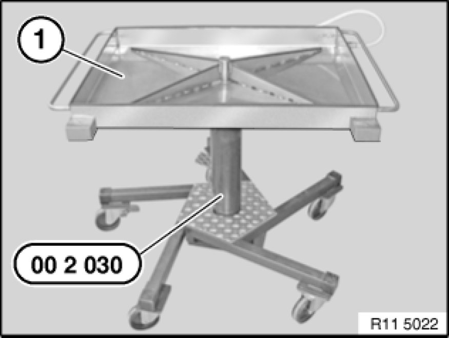

Component Tests and General Diagnostics
17 00 009 - Checking cooling system for leaks (M54/N46/N47/N52)

Special tools required:
- 00 2 030 00 2 030 Universal Hydro-Lifter Basic Unit
- 17 0 101 17 0 100 Tester
- 17 0 105 17 0 100 Tester
- 17 0 106 17 0 100 Tester

Warning!
Danger of scalding!
Only perform this work after engine has cooled down.

Protective measures/rules of conduct:
- Wear protective goggles
- Wear protective gloves
- Observe national/country-specific regulations

Important!
Risk of slipping due to coolant on the floor.
Danger of injury!
Catch and dispose of drained coolant in drip tray (1) and if necessary special tool 00 2 030 00 2 030 Universal Hydro-Lifter Basic Unit (universal hydraulic lifter).
Recycling:
Observe country-specific waste-disposal regulations.
Note:
Illustrations feature the E85.
Checking pressure drop in cooling system:
Open cap on coolant expansion tank. Fit special tools 17 0 101 17 0 100 Tester/ 17 0 105 17 0 100 Tester.
Build up gauge pressure, wait approx. 2 minutes.
Cooling system is impervious to leaks if pressure drop is max. 0.1 bar.
Checking pressure relief valve in cap:
Screw cap (1) onto special tool 17 0 106 17 0 100 Tester.
Build up pressure with special tool (hand pump) 17 0 101 17 0 100 Tester; observe pressure gauge to ascertain when opening pressure is achieved.
Compare opening pressure of pressure relief valve.